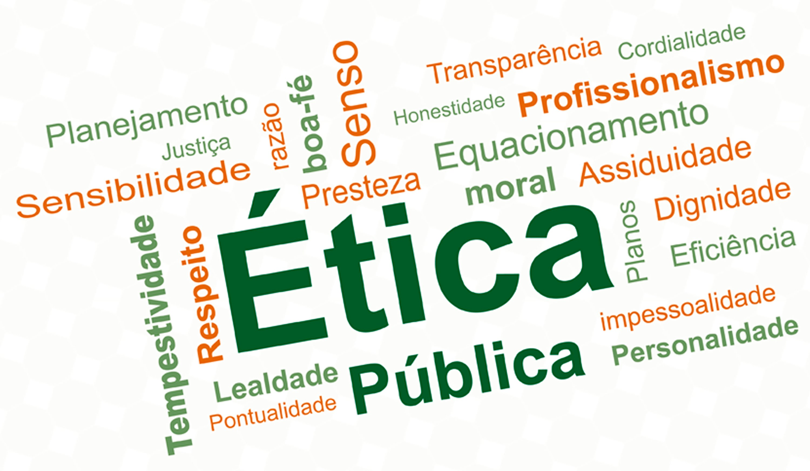

Ética é uma area da filosofia que acompanha as ações humanas moralmente.
A Ética deve ser compreendida de maneira universal, diferente da moral que está sempre ligada aos fatores sociais e culturais.
Moral, qualquer um pode ter a sua, mas a ética todos devem seguir.
A ética tenta estabelecer, de maneira moderada e com uma visão questionadora, o que é o certo, o errado e a linha, muitas vezes tênue, entre o bem e o mal.
Assim ela é muito ultilizada em meios proficionais onde orientam o profissinal em sua area. Ética não é lei.
Os códigos de ética possuem direcionamentos e o seu
descumprimento pode ser passível de sanção, mas não são considerados crimes.